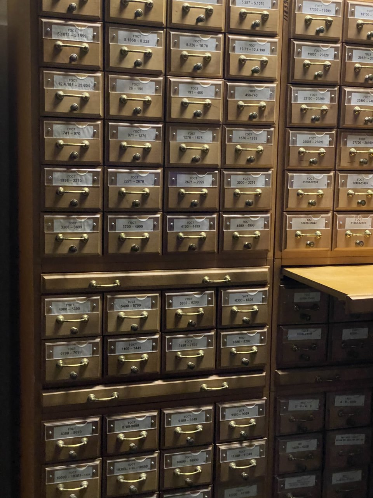
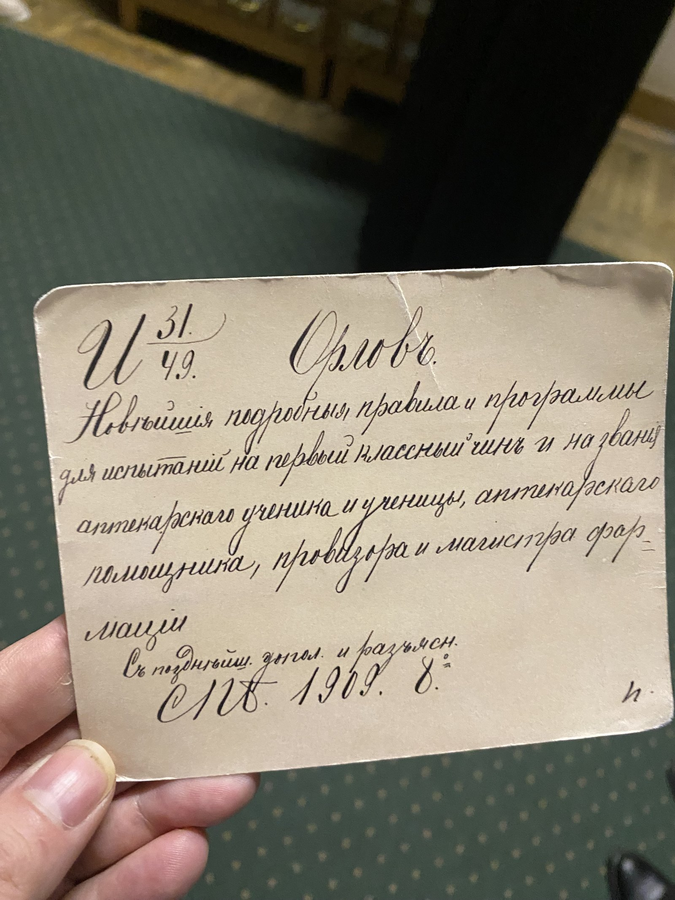
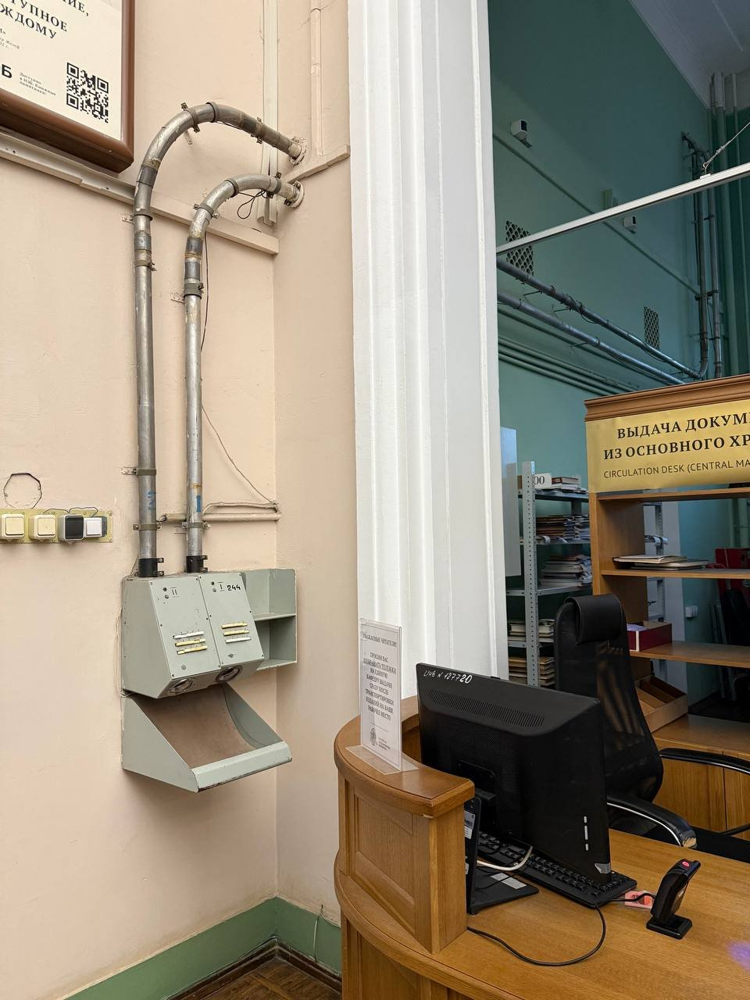
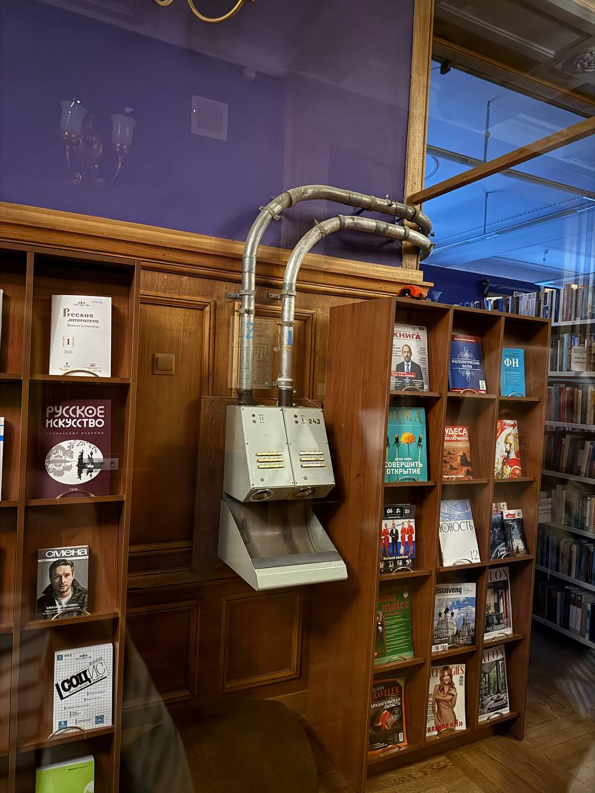
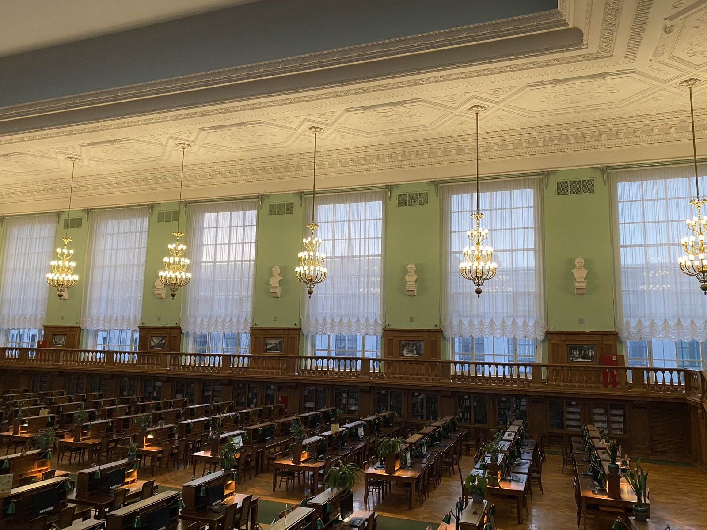

Almost 50 million volumes, three million of them rare, that's how much printed material (books, newspapers, magazines, sheet music) is held right now at the Lenin Library. It's the largest library in Europe, with the largest reading room. From the day it opened until today, it receives one copy of everything printed in Russia: from the free newspapers handed out in the metro to rare editions on quantum field theory. You can essentially trace all of Russia's printed output of more than 160 years. There are books in 367 languages here, you can get lifetime-edition copies of sheet music by great composers, and you can even host a board-game night with friends, they have a huge selection.

They still use paper card catalogs here, because not everything has been digitized. Visitors search not only on computers but through cards, some of which are more than 100 years old.


What struck me most was the pneumatic mail, still working and still carrying readers' requests from one department to another. It's loud, but runs like clockwork. The staff told me that when there was a computer failure a few years ago that lasted almost two weeks, the pneumatic mail handled the whole thing without a hiccup. They also let slip, in secret, that they sometimes used it to send candy for tea and even cigarettes. But that's a big secret :)


To preserve the books and the data, they keep cats, use dosimeters and cryorooms, and even test for mold. All of this to keep the books in their original state, so we can walk in at any moment and verify the information. You can also get high-resolution scans of any book. Books don't leave the library. That's exactly why I came here: I needed colour-calibrated reproductions of paintings by my favourite artists for my project on colour in painting. Archival albums with proper colour printing should beat my phone snapshots. Let "Find the Perfect Blue" begin.
